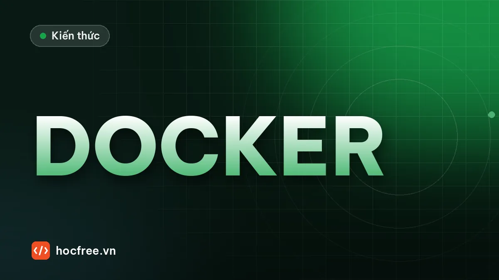

Docker cho kỹ sư AI: đóng gói ứng dụng vision, camera, GPU, compose
Dockerfile chuẩn cho ứng dụng vision Python, chạy với camera USB/GigE, tự khởi động lại, healthcheck, GPU NVIDIA, docker compose và lưu ý Windows/WSL.

Học xong bài này, bạn sẽ
- Đóng gói môi trường chạy giống nhau
- Viết Dockerfile cho ứng dụng vision
- Chạy GPU trong container
Nên học trước: Đo latency, logging và giám sát mô hình
Nội dung bài viết
- 1. Docker giải quyết gì, và khi nào không nên dùng
- 2. Ứng dụng mẫu: script suy luận ONNX đọc cấu hình từ biến môi trường
- 3. Ghim phiên bản: requirements.txt và opencv-python-headless
- 4. Dockerfile cho ứng dụng vision
- 5. Build và chạy: volume, camera, mạng, tự khởi động lại
- 6. GPU NVIDIA trong container
- 7. docker compose: cấu hình trạm trong một file
- 8. Máy trạm Windows: Docker Desktop và WSL 2
- 9. Lỗi thường gặp
- 10. Bài tập
- Tóm tắt
"Trên máy tôi chạy được mà": câu này xuất hiện ở gần như mọi lần chuyển phần mềm AI từ máy phát triển sang máy trạm. Máy trạm khác phiên bản Python, thiếu một thư viện hệ thống, NumPy mới hơn đổi hành vi, bản CUDA không khớp driver. Docker giải quyết đúng việc này: đóng gói ứng dụng cùng toàn bộ môi trường chạy của nó (hệ điều hành tối giản, Python, thư viện, mô hình) thành một image, chạy giống nhau trên mọi máy có Docker. Bài trước "Đo latency, logging và giám sát mô hình" giúp bạn biết trạm chạy nhanh và đúng tới đâu; bài này đóng gói chính script suy luận ONNX đó thành container: Dockerfile đúng cách, truy cập camera và mạng GigE, tự khởi động lại, healthcheck, GPU NVIDIA, docker compose, và những lưu ý khi máy trạm chạy Windows. Dự án tiếp theo "Đóng gói ứng dụng vision chạy 24/7" sẽ dùng container này làm tầng ngoài cùng của hệ thống tự phục hồi.
.dockerignore, opencv-python-headless); chạy container với volume, camera (--device), mạng host cho camera GigE, --restart unless-stopped, healthcheck; chạy GPU bằng NVIDIA Container Toolkit (--gpus all); viết compose.yaml; biết giới hạn của Docker trên Windows/WSL.1. Docker giải quyết gì, và khi nào không nên dùng
| Khái niệm | Giải thích | Ví dụ trong dự án vision |
|---|---|---|
| Image | Bản đóng gói chỉ đọc: hệ điều hành tối giản + thư viện + code. Tạo từ Dockerfile | tram-vision:1.2.0 |
| Layer | Mỗi lệnh trong Dockerfile tạo một lớp; lớp không đổi được dùng lại từ cache | Lớp cài NumPy/OpenCV chỉ build lại khi requirements.txt đổi |
| Container | Một tiến trình chạy từ image, cô lập về file, mạng, tiến trình | Trạm Line 2 đang chạy |
| Volume / bind mount | Thư mục của máy thật gắn vào container; dữ liệu còn lại khi container bị xóa | Ảnh NG, log, file kết quả, mô hình |
| Registry | Kho lưu image (Docker Hub, registry nội bộ) | Máy trạm kéo đúng bản 1.2.0 đã nghiệm thu |
Container không phải máy ảo: nó dùng chung nhân (kernel) với máy chủ. Container Linux chạy trên máy Linux (hoặc trong máy ảo Linux của Docker Desktop trên Windows). Vì vậy truy cập phần cứng (camera, GPU, card mạng) phải được "mở cửa" tường minh, và đó là nơi kỹ sư vision gặp nhiều khó khăn nhất.
| Phù hợp với Docker | Cân nhắc kỹ |
|---|---|
| Dịch vụ suy luận AI trên PC/thiết bị biên Linux | Ứng dụng giao diện Windows (WinForms/WPF) trên máy trạm |
| Máy chủ huấn luyện dùng chung nhiều dự án, nhiều bản CUDA | Camera công nghiệp cần driver nhân (kernel driver) hoặc SDK đặc thù chỉ hỗ trợ Windows |
| Tái lập môi trường: đồng nghiệp, CI, máy trạm thứ 10 giống máy thứ 1 | Yêu cầu thời gian thực rất chặt cần tinh chỉnh hệ điều hành |
| Cập nhật/quay lại phiên bản bằng một lệnh | Đội bảo trì nhà máy chưa quen Docker (cần đào tạo, tài liệu vận hành) |
2. Ứng dụng mẫu: script suy luận ONNX đọc cấu hình từ biến môi trường
Một ứng dụng chạy tốt trong container có ba đặc điểm: cấu hình qua biến môi trường (không sửa code để đổi đường dẫn, ngưỡng), ghi dữ liệu ra thư mục được gắn volume (container có thể bị xóa bất cứ lúc nào), và dừng sạch khi nhận SIGTERM (tín hiệu mà docker stop gửi). Để bài tự chạy được, ta tạo một mô hình ONNX rất nhỏ bằng onnx.helper: điểm NG cao khi ảnh có vùng tối (vết bẩn). Với dự án của bạn, thay bằng file ok_ng.onnx thật và hàm tiền xử lý theo thẻ mô hình.
import os
from pathlib import Path
import cv2
import numpy as np
import onnx
from onnx import TensorProto, helper
# Mô hình mẫu: diem = sigmoid(20 * (0.25 - giá trị nhỏ nhất của ảnh)), ảnh xám chuẩn hóa 0..1
do_thi = helper.make_graph(
[helper.make_node("ReduceMin", ["images", "truc"], ["toi_nhat"], keepdims=0),
helper.make_node("Sub", ["nguong_sang", "toi_nhat"], ["chenh"]),
helper.make_node("Mul", ["chenh", "he_so"], ["z"]),
helper.make_node("Sigmoid", ["z"], ["score"])],
"phat_hien_vet_toi",
[helper.make_tensor_value_info("images", TensorProto.FLOAT, ["batch", 1, 64, 64])],
[helper.make_tensor_value_info("score", TensorProto.FLOAT, ["batch"])],
initializer=[helper.make_tensor("truc", TensorProto.INT64, [3], [1, 2, 3]),
helper.make_tensor("nguong_sang", TensorProto.FLOAT, [], [0.25]),
helper.make_tensor("he_so", TensorProto.FLOAT, [], [20.0])])
mo_hinh = helper.make_model(do_thi, opset_imports=[helper.make_opsetid("", 18)])
mo_hinh.ir_version = 10
onnx.checker.check_model(mo_hinh)
Path("tram-vision/models").mkdir(parents=True, exist_ok=True)
onnx.save(mo_hinh, "tram-vision/models/ok_ng.onnx")
# Ảnh mẫu: 2 ảnh sạch, 2 ảnh có vết bẩn tối
vao = Path("data/in")
vao.mkdir(parents=True, exist_ok=True)
rng = np.random.default_rng(0)
for i in range(4):
anh = np.clip(rng.normal(130, 8, (120, 160)), 0, 255).astype(np.uint8)
if i % 2:
cv2.circle(anh, (int(rng.integers(30, 130)), int(rng.integers(30, 90))), 6, 20, -1)
cv2.imwrite(str(vao / f"sp_{i:03d}.png"), anh)
# Chạy thử trên máy với ĐÚNG các biến môi trường mà container sẽ nhận
os.environ.update({"MODEL_PATH": "tram-vision/models/ok_ng.onnx", "INPUT_DIR": "data/in",
"OUTPUT_DIR": "data/out", "THRESHOLD": "0.5", "RUN_ONCE": "1"})
print(sorted(p.name for p in vao.iterdir()), "|", Path("tram-vision/models/ok_ng.onnx").stat().st_size, "byte")['sp_000.png', 'sp_001.png', 'sp_002.png', 'sp_003.png'] | 288 byteScript suy luận, lưu thành tram-vision/app/main.py (kèm một file rỗng app/__init__.py để chạy được bằng python -m app.main):
# app/main.py: suy luận ONNX theo thư mục, cấu hình bằng biến môi trường
import json
import os
import signal
import time
from pathlib import Path
import cv2
import numpy as np
import onnxruntime as ort
def doc_cau_hinh():
e = os.environ
return {"model": e.get("MODEL_PATH", "/app/models/ok_ng.onnx"),
"vao": Path(e.get("INPUT_DIR", "/data/in")),
"ra": Path(e.get("OUTPUT_DIR", "/data/out")),
"nguong": float(e.get("THRESHOLD", "0.5")),
"luong": int(e.get("ORT_THREADS", "2")),
"mot_lan": e.get("RUN_ONCE", "0") == "1"}
def tien_xu_ly(anh_bgr_hoac_xam):
xam = anh_bgr_hoac_xam if anh_bgr_hoac_xam.ndim == 2 else cv2.cvtColor(anh_bgr_hoac_xam, cv2.COLOR_BGR2GRAY)
x = cv2.resize(xam, (64, 64), interpolation=cv2.INTER_AREA).astype(np.float32) / 255.0
return x[None, None] # (1, 1, 64, 64)
dang_chay = True
def _dung(signum, frame):
global dang_chay
dang_chay = False # xử lý xong ảnh hiện tại rồi thoát vòng lặp
def main():
cfg = doc_cau_hinh()
signal.signal(signal.SIGTERM, _dung) # docker stop gửi SIGTERM, chờ 10 s rồi SIGKILL
so = ort.SessionOptions()
so.intra_op_num_threads = cfg["luong"]
sess = ort.InferenceSession(cfg["model"], so, providers=["CPUExecutionProvider"])
ten_vao = sess.get_inputs()[0].name
cfg["ra"].mkdir(parents=True, exist_ok=True)
print(f"khởi động: ort {ort.__version__}, {sess.get_providers()}, ngưỡng {cfg['nguong']}", flush=True)
da_xu_ly = set()
while dang_chay:
for p in sorted(cfg["vao"].glob("*.png")):
if p.name in da_xu_ly:
continue
anh = cv2.imread(str(p), cv2.IMREAD_UNCHANGED)
da_xu_ly.add(p.name)
if anh is None:
print(json.dumps({"file": p.name, "loi": "không đọc được ảnh"}), flush=True)
continue
diem = float(sess.run(None, {ten_vao: tien_xu_ly(anh)})[0].ravel()[0])
kq = {"file": p.name, "diem": round(diem, 4), "ket_qua": "NG" if diem >= cfg["nguong"] else "OK"}
with open(cfg["ra"] / "ket_qua.jsonl", "a", encoding="utf-8") as f:
f.write(json.dumps(kq) + "\n")
print(json.dumps(kq), flush=True) # stdout -> docker logs
(cfg["ra"] / "heartbeat").write_text(f"{time.time():.3f}") # nhịp tim cho healthcheck
if cfg["mot_lan"]:
break
time.sleep(0.5)
print("đã dừng sạch", flush=True)
if __name__ == "__main__":
main()Chạy thử trên máy với các biến môi trường đã đặt ở khối trước (RUN_ONCE=1 nên xử lý hết ảnh rồi thoát; trong container biến này không đặt, vòng lặp chạy mãi tới khi nhận SIGTERM):
khởi động: ort 1.31.0, ['CPUExecutionProvider'], ngưỡng 0.5
{"file": "sp_000.png", "diem": 0.014, "ket_qua": "OK"}
{"file": "sp_001.png", "diem": 0.9687, "ket_qua": "NG"}
{"file": "sp_002.png", "diem": 0.0151, "ket_qua": "OK"}
{"file": "sp_003.png", "diem": 0.9687, "ket_qua": "NG"}
đã dừng sạchChú ý flush=True (hoặc biến môi trường PYTHONUNBUFFERED=1 trong Dockerfile): không có nó, Python giữ log trong bộ đệm khi stdout không phải terminal, và docker logs trống trơn đúng lúc bạn cần đọc.
Script kiểm tra sức khỏe, lưu thành tram-vision/app/healthcheck.py. Docker chạy nó định kỳ; mã thoát 0 là khỏe, 1 là không khỏe. Kiểm tra "nhịp tim" (heartbeat) mới hơn 30 giây phát hiện được cả trường hợp tiến trình còn sống nhưng vòng lặp đã treo:
# app/healthcheck.py
import os
import sys
import time
from pathlib import Path
def kiem_tra(file_nhip, tuoi_toi_da=30.0):
"""0 = khỏe; 1 = không có nhịp tim hoặc nhịp tim quá cũ (vòng lặp treo/chết)."""
p = Path(file_nhip)
if not p.exists():
print("UNHEALTHY: chưa có heartbeat")
return 1
tuoi = time.time() - p.stat().st_mtime
if tuoi > tuoi_toi_da:
print(f"UNHEALTHY: heartbeat cũ {tuoi:.0f} s")
return 1
print(f"OK: heartbeat {tuoi:.1f} s trước")
return 0
if __name__ == "__main__":
sys.exit(kiem_tra(Path(os.environ.get("OUTPUT_DIR", "/data/out")) / "heartbeat"))Thử ba tình huống: nhịp tim mới, nhịp tim 2 phút trước (vòng lặp treo), và không có file:
nhip = Path("data/out/heartbeat")
print("mới :", kiem_tra(nhip))
cu = time.time() - 120
os.utime(nhip, (cu, cu)) # giả lập: vòng lặp đã treo 2 phút
print("treo :", kiem_tra(nhip))
print("thiếu:", kiem_tra("data/out/khong_co"))OK: heartbeat 0.0 s trước
mới : 0
UNHEALTHY: heartbeat cũ 120 s
treo : 1
UNHEALTHY: chưa có heartbeat
thiếu: 13. Ghim phiên bản: requirements.txt và opencv-python-headless
"Chạy giống nhau mọi nơi" chỉ đúng khi mọi phiên bản được ghim cứng (==). Viết numpy hay numpy>=2 nghĩa là mỗi lần build lại image có thể nhận một bản khác. Với container, dùng opencv-python-headless: bản không có giao diện (không imshow), không kéo theo thư viện đồ họa. Bản thường opencv-python trong image slim sẽ báo lỗi kiểu ImportError: libGL.so.1: cannot open shared object file; và cài cả hai bản cùng lúc làm chúng ghi đè lên nhau. Script sau tạo file khóa phiên bản từ môi trường bạn đã thử, và kiểm tra một file requirements:
import re
from importlib import metadata
def tao_lock(ten_goi):
"""Ghi phiên bản ĐANG CÀI của các gói trực tiếp mà ứng dụng dùng."""
return [f"{t}=={metadata.version(t)}" for t in ten_goi]
def kiem_tra_requirements(noi_dung):
van_de, da_thay = [], {}
for so_dong, dong in enumerate(noi_dung.splitlines(), 1):
dong = dong.split("#")[0].strip()
if not dong:
continue
m = re.match(r"^([A-Za-z0-9_.\-]+)\s*(==|>=|<=|~=|>|<)?\s*([\w.]+)?$", dong)
if not m:
van_de.append(f"dòng {so_dong}: không hiểu '{dong}'")
continue
ten = m.group(1).lower().replace("_", "-")
if m.group(2) != "==":
van_de.append(f"dòng {so_dong}: {ten} chưa ghim bằng ==")
if ten in da_thay:
van_de.append(f"dòng {so_dong}: {ten} lặp lại (dòng {da_thay[ten]})")
da_thay[ten] = so_dong
if "opencv-python" in da_thay:
van_de.append("dùng opencv-python-headless thay cho opencv-python trong container")
if "opencv-python" in da_thay and "opencv-python-headless" in da_thay:
van_de.append("cài cả opencv-python và opencv-python-headless: hai gói ghi đè nhau")
return van_de
lock = tao_lock(["numpy", "opencv-python-headless", "onnxruntime"])
Path("tram-vision/requirements.txt").write_text("\n".join(lock) + "\n", encoding="utf-8")
print("requirements.txt:", lock)
print("kiểm tra lock:", kiem_tra_requirements("\n".join(lock)) or "đạt")
xau = """numpy
opencv-python>=4.8
onnxruntime==1.31.0
opencv-python-headless==5.0.0.93
numpy==2.5.3"""
for v in kiem_tra_requirements(xau):
print(" -", v)requirements.txt: ['numpy==2.5.3', 'opencv-python-headless==5.0.0.93', 'onnxruntime==1.31.0']
kiểm tra lock: đạt
- dòng 1: numpy chưa ghim bằng ==
- dòng 2: opencv-python chưa ghim bằng ==
- dòng 5: numpy lặp lại (dòng 1)
- dùng opencv-python-headless thay cho opencv-python trong container
- cài cả opencv-python và opencv-python-headless: hai gói ghi đè nhauPhiên bản trong file khóa của bạn sẽ là phiên bản đang cài trên máy bạn. Chỉ ghi các gói ứng dụng trực tiếp dùng; nếu cần khóa cả gói phụ thuộc gián tiếp, dùng công cụ như pip freeze trong một môi trường sạch, hoặc pip-tools/uv để sinh file khóa đầy đủ. Không bao giờ đưa torch vào image suy luận khi ứng dụng chỉ dùng ONNX Runtime: image sẽ phình thêm hàng GB.
4. Dockerfile cho ứng dụng vision
Cấu trúc thư mục dự án:
tram-vision/
├── Dockerfile
├── .dockerignore
├── requirements.txt ← file khóa ở mục 3
├── compose.yaml ← mục 7
├── app/
│ ├── __init__.py ← file rỗng
│ ├── main.py
│ └── healthcheck.py
└── models/
└── ok_ng.onnx# Dockerfile
# Cùng phiên bản Python với môi trường đã thử (bài viết dùng 3.13). Ghim chặt hơn: python:3.13.x-slim-<debian>
FROM python:3.13-slim
ENV PYTHONDONTWRITEBYTECODE=1 \
PYTHONUNBUFFERED=1 \
PIP_NO_CACHE_DIR=1 \
PIP_DISABLE_PIP_VERSION_CHECK=1
WORKDIR /app
# (1) Thư viện trước: lớp này chỉ build lại khi requirements.txt thay đổi
COPY requirements.txt .
RUN pip install -r requirements.txt
# (2) Người dùng không phải root; nhóm video để đọc /dev/video*
RUN useradd --create-home --uid 1000 --groups video app
# (3) Code và mô hình: thay đổi thường xuyên nhất nên đặt cuối
COPY --chown=app:app app/ ./app/
COPY --chown=app:app models/ ./models/
USER app
ENV MODEL_PATH=/app/models/ok_ng.onnx \
INPUT_DIR=/data/in \
OUTPUT_DIR=/data/out
HEALTHCHECK --interval=30s --timeout=5s --start-period=60s --retries=3 \
CMD ["python", "-m", "app.healthcheck"]
# Dạng exec (mảng JSON): python là tiến trình chính (PID 1), nhận được SIGTERM khi docker stop
CMD ["python", "-m", "app.main"]Giải thích những dòng quan trọng:
- Image nền slim: bản Debian tối giản, nhỏ hơn nhiều bản đầy đủ. Bản
alpinecòn nhỏ hơn nhưng dùng thư viện C khác (musl), nhiều gói Python khoa học không có wheel dựng sẵn: tránh với ứng dụng vision. - Thứ tự lớp và cache: Docker dùng lại lớp đã build nếu lệnh và file đầu vào không đổi; một lớp thay đổi làm mọi lớp phía sau build lại. Copy
requirements.txtvà cài thư viện trước, copy code sau: sửa một dòng code chỉ mất vài giây build thay vì cài lại OpenCV, ONNX Runtime. - Không chạy bằng root: nếu ứng dụng bị khai thác hoặc lỗi ghi nhầm đường dẫn, quyền root trong container gây hại nhiều hơn. Hệ quả cần nhớ: thư mục gắn vào (volume) phải cho phép uid 1000 ghi (mục 5).
- PYTHONUNBUFFERED=1: log hiện ngay trong
docker logs. - HEALTHCHECK: Docker chạy lệnh mỗi 30 s, cho phép 60 s khởi động, đánh dấu
unhealthysau 3 lần lỗi liên tiếp. - CMD dạng exec: dạng chuỗi
CMD python -m app.mainchạy qua/bin/sh -c, shell nhận SIGTERM chứ không phải Python, ứng dụng không dừng sạch mà bị SIGKILL sau 10 s.
File .dockerignore loại những thứ không được vào image (giống .gitignore). Thiếu nó, lệnh COPY và cả "build context" gửi cho Docker có thể kéo theo hàng GB dataset, trọng số huấn luyện, môi trường ảo, và cả file chứa mật khẩu:
# .dockerignore
.git
.venv/
__pycache__/
*.pyc
datasets/
data/
runs/
notebooks/
*.pt
*.pth
.env
*.logENV, ARG) hay copy vào image: ai có image là đọc được, kể cả khi bạn xóa ở lớp sau (lớp cũ vẫn còn). Truyền lúc chạy bằng --env-file (file nằm ngoài image, phân quyền chặt) hoặc cơ chế secrets của hệ thống triển khai.Kiểm tra Dockerfile bằng một "linter" nhỏ. Script dưới đây đọc Dockerfile, gộp các dòng nối bằng \, rồi kiểm tra các quy tắc trên cho một Dockerfile kiểu "người mới viết" và cho Dockerfile của mục này (lưu sẵn vào tram-vision/Dockerfile):
import re
from pathlib import Path
def kiem_tra_dockerfile(noi_dung):
dong = [d.strip() for d in noi_dung.replace("\\\n", " ").splitlines()]
lenh = [d for d in dong if d and not d.startswith("#")]
van_de = []
tu_khoa = [d.split()[0].upper() for d in lenh]
tu = lenh[0].split()[1] if lenh and tu_khoa[0] == "FROM" else ""
if ":" not in tu or tu.endswith(":latest"):
van_de.append(f"FROM '{tu}': ghim tag cụ thể, không dùng latest")
users = [d.split()[1] for d in lenh if d.upper().startswith("USER ")]
if not users or users[-1] in ("root", "0"):
van_de.append("thiếu USER không phải root")
copy = [i for i, d in enumerate(lenh) if d.upper().startswith("COPY ")]
req = [i for i in copy if "requirements" in lenh[i]]
code = [i for i in copy if "requirements" not in lenh[i]]
if not req or (code and min(code) < min(req)):
van_de.append("COPY requirements.txt và pip install trước khi COPY code (tận dụng cache)")
if any("pip install" in d for d in lenh) and "--no-cache-dir" not in noi_dung \
and "PIP_NO_CACHE_DIR" not in noi_dung:
van_de.append("pip install thiếu --no-cache-dir (image phình vì cache pip)")
for d in lenh:
if "apt-get install" in d and ("--no-install-recommends" not in d or "/var/lib/apt/lists" not in d):
van_de.append("apt-get install: thêm --no-install-recommends và xóa /var/lib/apt/lists")
if re.match(r"^(ENV|ARG)\b.*(PASSWORD|SECRET|TOKEN|API_KEY)", d, re.I):
van_de.append(f"bí mật trong image: '{d[:40]}'")
if "HEALTHCHECK" not in tu_khoa:
van_de.append("thiếu HEALTHCHECK")
cmd = [d for d in lenh if d.upper().startswith(("CMD", "ENTRYPOINT"))]
if cmd and not cmd[-1].split(None, 1)[1].startswith("["):
van_de.append("CMD dạng chuỗi: dùng dạng exec [\"python\", ...] để nhận SIGTERM")
return van_de
XAU = """FROM python:latest
COPY . /app
WORKDIR /app
RUN apt-get update && apt-get install -y libgl1
RUN pip install -r requirements.txt
ENV PLC_PASSWORD=123456
CMD python main.py
"""
TOT = """FROM python:3.13-slim
ENV PYTHONDONTWRITEBYTECODE=1 \\
PYTHONUNBUFFERED=1 \\
PIP_NO_CACHE_DIR=1 \\
PIP_DISABLE_PIP_VERSION_CHECK=1
WORKDIR /app
COPY requirements.txt .
RUN pip install -r requirements.txt
RUN useradd --create-home --uid 1000 --groups video app
COPY --chown=app:app app/ ./app/
COPY --chown=app:app models/ ./models/
USER app
ENV MODEL_PATH=/app/models/ok_ng.onnx \\
INPUT_DIR=/data/in \\
OUTPUT_DIR=/data/out
HEALTHCHECK --interval=30s --timeout=5s --start-period=60s --retries=3 \\
CMD ["python", "-m", "app.healthcheck"]
CMD ["python", "-m", "app.main"]
"""
Path("tram-vision/Dockerfile").write_text(TOT, encoding="utf-8")
print("Dockerfile người mới:")
for v in kiem_tra_dockerfile(XAU):
print(" -", v)
print("Dockerfile mục 4:", kiem_tra_dockerfile(Path("tram-vision/Dockerfile").read_text()) or "đạt mọi quy tắc")Dockerfile người mới:
- FROM 'python:latest': ghim tag cụ thể, không dùng latest
- thiếu USER không phải root
- COPY requirements.txt và pip install trước khi COPY code (tận dụng cache)
- pip install thiếu --no-cache-dir (image phình vì cache pip)
- apt-get install: thêm --no-install-recommends và xóa /var/lib/apt/lists
- bí mật trong image: 'ENV PLC_PASSWORD=123456'
- thiếu HEALTHCHECK
- CMD dạng chuỗi: dùng dạng exec ["python", ...] để nhận SIGTERM
Dockerfile mục 4: đạt mọi quy tắcLinter này chỉ là bài tập để hiểu quy tắc. Trong dự án thật, dùng công cụ có sẵn như hadolint trong CI, và chạy thêm công cụ quét lỗ hổng cho image.
5. Build và chạy: volume, camera, mạng, tự khởi động lại
cd tram-vision
docker build -t tram-vision:1.0.0 . # tag theo phiên bản phần mềm, không chỉ "latest"
# Chạy thử một lần, xóa container khi xong; gắn thư mục dữ liệu của máy thật vào /data
mkdir -p ~/tram/data/in ~/tram/data/out
docker run --rm -e RUN_ONCE=1 -v ~/tram/data:/data tram-vision:1.0.0
# Chạy thật: nền, tự khởi động lại, giới hạn dung lượng log
docker run -d --name tram-vision \
--restart unless-stopped \
-v /opt/tram/data:/data \
-v /opt/tram/models:/app/models:ro \
--env-file /opt/tram/tram.env \
--log-opt max-size=10m --log-opt max-file=5 \
tram-vision:1.0.0
docker logs -f tram-vision # xem log (stdout của app)
docker inspect --format '{{.State.Health.Status}}' tram-vision # starting / healthy / unhealthy
docker stop tram-vision # SIGTERM, chờ 10 s, rồi SIGKILL| Tùy chọn | Ý nghĩa | Lưu ý với trạm vision |
|---|---|---|
-v máy:container[:ro] | Gắn thư mục; :ro chỉ đọc | Ảnh NG, kết quả, log nằm ngoài container. Thư mục phải cho uid 1000 ghi: sudo chown -R 1000:1000 /opt/tram/data |
--restart unless-stopped | Tự chạy lại khi tiến trình thoát và khi máy khởi động lại (dịch vụ Docker phải bật tự chạy), trừ khi bạn đã docker stop | Đây là tầng khởi động lại ngoài cùng; dự án 24/7 sẽ thêm supervisor bên trong |
--device /dev/video0 | Cho container dùng camera USB (UVC) | Người dùng trong container cần thuộc nhóm video (Dockerfile đã thêm; hoặc --group-add video) |
--network host | Container dùng thẳng mạng của máy chủ, không qua NAT | Cần cho camera GigE Vision: tìm camera bằng gói tin broadcast, nhận ảnh qua UDP; mạng bridge mặc định chặn/NAT các gói này. Cũng tiện cho Modbus/OPC UA tới PLC |
--log-opt max-size | Xoay vòng log của Docker | Mặc định log không giới hạn: chạy vài tháng có thể đầy ổ đĩa |
--env-file | Biến môi trường từ file ngoài image | Ngưỡng, địa chỉ PLC, mật khẩu |
Ví dụ đầy đủ cho trạm có camera USB và một camera GigE:
docker run -d --name tram-line2 \
--restart unless-stopped \
--network host \
--device /dev/video0:/dev/video0 \
-v /opt/tram/data:/data \
--env-file /opt/tram/tram.env \
tram-vision:1.0.0Với camera GigE còn phải cấu hình card mạng trên máy chủ (MTU jumbo frame, bộ đệm nhận lớn) như bài về camera công nghiệp, vì container dùng chung card mạng đó. SDK camera của hãng (để điều khiển phơi sáng, trigger) phải cài trong image; một số SDK cần thêm quyền thiết bị USB (-v /dev/bus/usb:/dev/bus/usb kèm quy tắc thiết bị) hoặc driver nhân trên máy chủ. Hãy thử trên phần cứng thật trước khi chốt kiến trúc.
docker run và docker compose thông thường, healthcheck chỉ đánh dấu container là unhealthy; chính sách --restart chỉ hành động khi tiến trình thoát. Vòng lặp treo mà tiến trình chưa thoát thì container vẫn "Up (unhealthy)" mãi. Cần thêm một tầng xử lý: supervisor bên trong ứng dụng tự kill worker treo (dự án 24/7), hoặc một tiến trình giám sát trạng thái health và khởi động lại container.6. GPU NVIDIA trong container
Container không tự thấy GPU. Cần ba thứ: driver NVIDIA trên máy chủ, NVIDIA Container Toolkit trên máy chủ (cầu nối để Docker gắn GPU và thư viện driver vào container), và một image có thư viện CUDA phù hợp (driver máy chủ phải đủ mới cho bản CUDA trong image). CUDA toolkit không cần cài trên máy chủ.
# Kiểm tra: container thấy GPU (thay <phiên-bản> bằng tag CUDA phù hợp driver của bạn)
docker run --rm --gpus all nvidia/cuda:<phiên-bản>-base-ubuntu24.04 nvidia-smi
# Chỉ dùng GPU số 0
docker run -d --gpus '"device=0"' --restart unless-stopped tram-vision-gpu:1.0.0# Dockerfile.gpu (phác thảo): nền CUDA + cuDNN bản runtime, cài onnxruntime-gpu
FROM nvidia/cuda:<phiên-bản>-cudnn-runtime-ubuntu24.04
RUN apt-get update && apt-get install -y --no-install-recommends python3 python3-venv \
&& rm -rf /var/lib/apt/lists/*
RUN python3 -m venv /opt/venv
ENV PATH=/opt/venv/bin:$PATH PYTHONUNBUFFERED=1
COPY requirements-gpu.txt .
RUN pip install --no-cache-dir -r requirements-gpu.txt # onnxruntime-gpu==..., KHÔNG cài thêm onnxruntime
# ... phần còn lại như Dockerfile CPUChọn bản onnxruntime-gpu và tag CUDA/cuDNN theo bảng tương thích trong tài liệu ONNX Runtime; lệch phiên bản thì CUDA Execution Provider không nạp được và ứng dụng âm thầm rơi về CPU (in sess.get_providers() lúc khởi động để biết). Image GPU lớn hơn nhiều (hàng GB) do thư viện CUDA/cuDNN; image nền "runtime" nhỏ hơn bản "devel" vốn chứa trình biên dịch.
7. docker compose: cấu hình trạm trong một file
Gõ lại lệnh docker run dài 10 dòng là nguồn lỗi. compose.yaml ghi toàn bộ cấu hình vào một file, quản lý cùng code:
# compose.yaml
services:
tram-vision:
build: .
image: tram-vision:1.0.0
container_name: tram-line2
restart: unless-stopped
network_mode: host # camera GigE, PLC
devices:
- /dev/video0:/dev/video0
volumes:
- /opt/tram/data:/data
- /opt/tram/models:/app/models:ro
env_file: /opt/tram/tram.env
environment:
THRESHOLD: "0.5"
ORT_THREADS: "2"
healthcheck:
test: ["CMD", "python", "-m", "app.healthcheck"]
interval: 30s
timeout: 5s
start_period: 60s
retries: 3
logging:
driver: json-file
options:
max-size: "10m"
max-file: "5"
# Bỏ chú thích khối dưới nếu dùng image GPU và máy có NVIDIA Container Toolkit
# deploy:
# resources:
# reservations:
# devices:
# - driver: nvidia
# count: all
# capabilities: [gpu]docker compose up -d --build # build (nếu cần) và chạy nền
docker compose ps # trạng thái, có cột health
docker compose logs -f # xem log
docker compose down # dừng và xóa container (volume trên máy giữ nguyên)Cập nhật phiên bản: build image tag mới (1.1.0), sửa tag trong compose.yaml, docker compose up -d. Quay lại bản cũ: đổi tag về 1.0.0 rồi chạy lại lệnh. Đây là lợi ích lớn nhất của việc gắn tag phiên bản thay vì latest.
8. Máy trạm Windows: Docker Desktop và WSL 2
- Trên Windows, Docker Desktop chạy container Linux trong máy ảo nhẹ của WSL 2. Mọi thứ trong bài chạy được, nhưng phần cứng phải đi qua thêm một lớp ảo hóa.
- GPU NVIDIA: được hỗ trợ qua WSL 2 với driver NVIDIA cho Windows bản hỗ trợ WSL;
--gpus allhoạt động trong Docker Desktop. - Camera USB: thiết bị USB không tự xuất hiện trong WSL 2; phải chuyển tiếp bằng công cụ như
usbipd-win, độ ổn định cho camera tốc độ cao cần thử kỹ. - Camera GigE và mạng host:
--network hosttrên Docker Desktop hoạt động khác Linux (container nằm trong máy ảo), broadcast tìm camera thường không đi qua được. Trạm dùng camera GigE nên chạy Linux với Docker Engine trực tiếp, hoặc giữ phần thu ảnh là ứng dụng Windows gốc và chỉ đưa dịch vụ suy luận vào container. - Đường dẫn và tốc độ: bind mount từ ổ Windows (
-v C:\tram\data:/data) chậm hơn đáng kể so với thư mục nằm trong hệ thống file của WSL; với ảnh tốc độ cao, ghi vào thư mục WSL hoặc volume của Docker. - Container Windows gốc (Windows containers) là một hệ khác, ít dùng cho AI vision; đa số image AI là image Linux.
9. Lỗi thường gặp
| Triệu chứng | Nguyên nhân | Cách xử lý |
|---|---|---|
ImportError: libGL.so.1 | Cài opencv-python bản GUI trong image slim | Dùng opencv-python-headless |
docker logs trống dù app đang chạy | Python giữ stdout trong bộ đệm | PYTHONUNBUFFERED=1 hoặc flush=True |
PermissionError khi ghi vào /data | Container chạy uid 1000, thư mục máy chủ thuộc root | chown 1000:1000 thư mục, hoặc --user phù hợp |
| Build lại mất 5 phút dù chỉ sửa một dòng code | COPY code trước khi cài thư viện | Đổi thứ tự lớp như mục 4 |
| Image nặng vài GB | Không có .dockerignore; cài torch; giữ cache pip/apt | .dockerignore, chỉ cài thứ cần cho suy luận, --no-cache-dir |
| Không thấy camera GigE trong container | Mạng bridge chặn broadcast/UDP | --network host trên Linux; cấu hình card mạng máy chủ |
docker stop mất đúng 10 s, kết quả cuối bị mất | CMD dạng chuỗi hoặc app không bắt SIGTERM | CMD dạng exec, xử lý SIGTERM như main.py |
| Container "Up (unhealthy)" mãi | Healthcheck không tự khởi động lại | Supervisor trong app hoặc tiến trình giám sát bên ngoài |
10. Bài tập
Bài 1 (thực hành chính). Đóng gói script suy luận ONNX của bạn (hoặc app/main.py của bài) thành image và chạy được bằng docker run: kết quả từng ảnh hiện trong docker logs, file ket_qua.jsonl xuất hiện trên máy chủ, trạng thái health là healthy, và docker stop in "đã dừng sạch". Viết các lệnh và cách kiểm tra từng tiêu chí.
Xem đáp án
cd tram-vision
touch app/__init__.py
docker build -t tram-vision:1.0.0 .
mkdir -p ~/tram/data/in ~/tram/data/out
cp ../data/in/*.png ~/tram/data/in/ # ảnh thử
sudo chown -R 1000:1000 ~/tram/data # uid của user "app" trong image
docker run -d --name tram-test --restart unless-stopped -v ~/tram/data:/data tram-vision:1.0.0
docker logs tram-test # tiêu chí 1: thấy dòng "khởi động" và 4 dòng JSON
cat ~/tram/data/out/ket_qua.jsonl # tiêu chí 2: file nằm trên máy chủ
sleep 40; docker inspect --format '{{.State.Health.Status}}' tram-test # tiêu chí 3: healthy
docker stop tram-test && docker logs --tail 1 tram-test # tiêu chí 4: "đã dừng sạch"
docker rm tram-testNội dung docker logs phải giống phần chạy thử ở mục 2 (cùng code, cùng mô hình, cùng ảnh): dòng khởi động rồi 4 dòng JSON với sp_001 và sp_003 là NG. Nếu docker stop mất trọn 10 giây và không có dòng "đã dừng sạch", kiểm tra CMD có đúng dạng exec không. Nếu container khởi động lại liên tục, đọc docker logs của lần chạy trước: thường là sai MODEL_PATH hoặc lỗi quyền ghi /data/out.
Bài 2. Sửa Dockerfile "người mới" ở mục 4 cho đến khi kiem_tra_dockerfile không còn báo vấn đề nào, nhưng vẫn giữ việc cài một gói hệ thống bằng apt (ví dụ tzdata để log đúng múi giờ). Mật khẩu PLC truyền vào thế nào?
Xem đáp án
SUA = """FROM python:3.13-slim
ENV PYTHONUNBUFFERED=1 PIP_NO_CACHE_DIR=1 TZ=Asia/Ho_Chi_Minh
RUN apt-get update && apt-get install -y --no-install-recommends tzdata \\
&& rm -rf /var/lib/apt/lists/*
WORKDIR /app
COPY requirements.txt .
RUN pip install -r requirements.txt
RUN useradd --create-home --uid 1000 app
COPY --chown=app:app app/ ./app/
USER app
HEALTHCHECK --interval=30s --timeout=5s --retries=3 CMD ["python", "-m", "app.healthcheck"]
CMD ["python", "-m", "app.main"]
"""
print(kiem_tra_dockerfile(SUA) or "đạt mọi quy tắc")đạt mọi quy tắcMật khẩu PLC không nằm trong Dockerfile: ghi vào /opt/tram/tram.env (quyền đọc chỉ cho tài khoản vận hành, không đưa lên git) và chạy với --env-file /opt/tram/tram.env; ứng dụng đọc bằng os.environ["PLC_PASSWORD"]. COPY . /app cũng được tách thành copy requirements.txt trước, code sau, và có .dockerignore đi kèm.
Bài 3. Trạm chạy compose như mục 7. Một đêm, camera GigE mất kết nối, vòng lặp chính của ứng dụng bị kẹt trong lệnh chờ ảnh không có timeout. Sáng ra container vẫn "Up (unhealthy)" và PLC báo trạm không phản hồi suốt 5 giờ. (a) Vì sao restart: unless-stopped không cứu được? (b) Đề xuất ba thay đổi để lần sau trạm tự phục hồi trong vòng 1 phút.
Xem đáp án
(a) Chính sách restart chỉ hành động khi tiến trình chính thoát. Vòng lặp treo nhưng tiến trình vẫn sống, nên Docker không làm gì; healthcheck chỉ đổi trạng thái sang unhealthy (heartbeat cũ) chứ không khởi động lại container. (b) (1) Mọi lệnh chờ ảnh/PLC phải có timeout; hết timeout thì báo lỗi, thử kết nối lại camera, và ghi log. (2) Thêm watchdog: một luồng hoặc supervisor theo dõi heartbeat của vòng lặp chính, quá 30 s thì kết thúc tiến trình với mã lỗi (để restart: unless-stopped chạy lại container). Đây chính là kiến trúc supervisor/worker của dự án "Đóng gói ứng dụng vision chạy 24/7". (3) Giám sát từ bên ngoài: hệ thống giám sát đọc trạng thái health hoặc file heartbeat và cảnh báo cho kỹ sư ca trực ngay khi trạm unhealthy quá 2 phút, thay vì chờ đến sáng.
Tóm tắt
- Image là bản đóng gói chỉ đọc gồm nhiều lớp; container là tiến trình chạy từ image, dùng chung kernel với máy chủ; dữ liệu cần giữ lại phải nằm trên volume.
- Ứng dụng hợp container: cấu hình bằng biến môi trường, log ra stdout (
PYTHONUNBUFFERED=1), ghi dữ liệu ra thư mục gắn volume, dừng sạch khi nhận SIGTERM, có heartbeat cho healthcheck. - Dockerfile: nền
python:3.x-slim, requirements ghim bằng==,opencv-python-headless, cài thư viện trước khi copy code,.dockerignore, user không phải root, HEALTHCHECK, CMD dạng exec, không có bí mật. docker run:-vcho dữ liệu/mô hình,--device /dev/video0cho camera USB,--network hostcho camera GigE và PLC,--restart unless-stopped, giới hạn log. Healthcheck chỉ đánh dấu, không tự khởi động lại.- GPU: driver + NVIDIA Container Toolkit trên máy chủ, image CUDA/cuDNN phù hợp,
--gpus allhoặc khốideploy.resourcestrong compose. - Windows: Docker Desktop + WSL 2 hỗ trợ GPU, nhưng camera USB/GigE khó; trạm dùng camera GigE nên chạy Linux hoặc tách phần thu ảnh ra ngoài container.
Bài tiếp theo: Dự án chặng 13: đóng gói ứng dụng vision chạy 24/7, cấu hình bằng file, tự khởi động lại khi lỗi và cập nhật mô hình an toàn.
Bài tập thực hành
- Viết Dockerfile cho script suy luận ONNX của bạn và chạy được bằng docker run.
Làm xong bài tập mới chuyển sang bài tiếp theo: tự viết code là cách duy nhất để nhớ lâu.